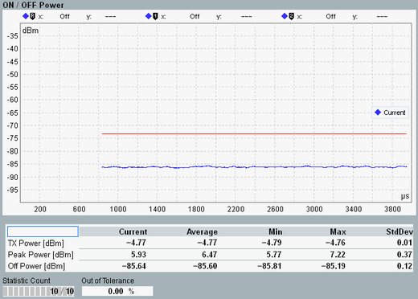

This view is only available for TDD signals. The results are displayed in a diagram and as a table of statistical results.

The diagram shows the power in the uplink part of the special subframe (subframe number 1) and three subsequent subframes (subframe number 2, 3, and 4).
The x-axis covers all four subframes, from the start of the special subframe to the end of subframe number 4. The trace and the limit line are only displayed for the uplink parts, not for the downlink parts of the special subframe and not for downlink subframes. The distinction between UL and DL parts is done according to the specified uplink-downlink configuration and special subframe configuration.
The used measurement filter is compliant with 3GPP TS 36.141, section 6.4. Each single trace value is derived from the measured power values via a 70 µs average window, as defined by 3GPP.
The limit line is calculated from the configured limit and the configured cell bandwidth.
- "TX Power": RMS averaged power over all samples in subframe number 0
- "Peak Power": peak power of all samples in subframe number 0
- "OFF Power": maximum of all "Current" trace values
For additional information, refer to "Common View Elements".